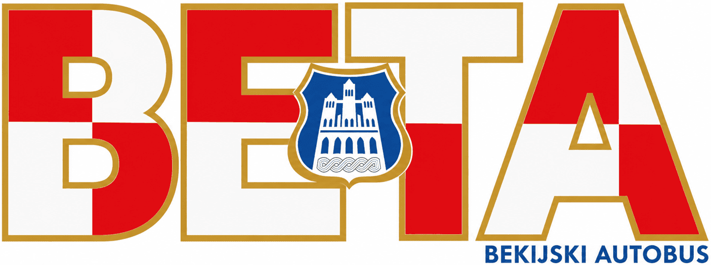

Web-karta predstavlja simulirani sustav javnog prijevoza na području Općine Grude, nazvan BETA (BEkijski Autobus). Pogodnost za razvoj javnog prijevoza određena je putem višekriterijske analize, a zatim su stvorene linije koje povezuju dva suprotna kraja Općine putem općinskog središta.
Prikaz položaja vozila, vremena dolaska i prometovanja linija zasniva se na unaprijed definiranom voznom redu te računalnoj simulaciji kretanja vozila u stvarnom vremenu. Sustav nije povezan sa stvarnim vozilima niti koristi podatke o njihovoj stvarnoj lokaciji.
Vozila ne prometuju:
01.01.–06.01., 01.03., 01.–02.05., 30.05., 22.06., 05.08., 15.08.,
01.–02.11., 18.11., 25.11., 24.12.–31.12.,
od Velikog četvrtka do Uskrsnog ponedjeljka te na Tijelovo.
Popis autobusnih linija:
1 GOMILICE — OTOK
2 PRISPA — GOMILICE
3 GORICA — RUŽIĆI
4 DRINOVCI — LEDINAC
5 LEDINAC — DRINOVAČKO BRDO
6 TIHALJINA — RUPINE
7 PUTEŠEVICA — MEDOVIĆI
8 BORAJNA — CERE
9 PEĆ MLINI — BORAJNA